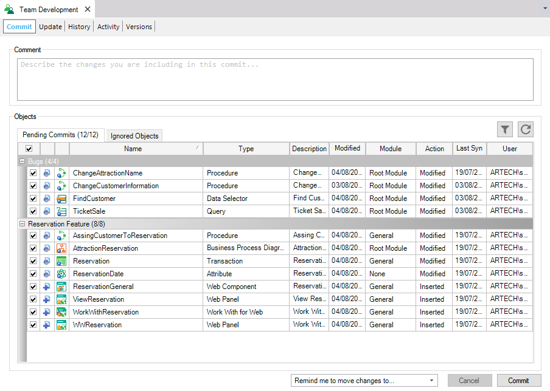

A ChangeSet is an arbitrary aggrupation of objects which it's defined by the user. It allows sorting and grouping all the Pending for Commits objects in different sets.
It often happens that a Developer works on several unrelated tasks at once, and when looking in the Commit dialog, all the changes are mixed in together.
To solve this, the ChangeSets option allows the Developer to group objects together, making it easier to see the relationship between them. Thus it's very useful when working for example on a huge feature but at the same time, fixing some minor problems because allows the Developer to identify quickly and select the corresponding objects to Commit.
Note: This option can only work if the changes do not overlap. If two different tasks affect the same object, there is no way to separate the changes.
First of all, to move an object into a ChangeSet, it has to be Pending for Commit.
From the Commit dialog, or from the Team Development option of the object's contextual menu, the Developer will be able to select one or more objects and, by right-clicking on them, choose the Move to changelist option to add them to a ChangeSet.
If any ChangeSets were created before, only the <new changelist> option would be displayed giving the possibility to choose a name for the new ChangeSet. Otherwise, all the existing ChangeSets will also be presented.
When selecting a ChangeSet, the object will automatically be added to it, changing it position in the Pending for Commit list giving an immediate visual indication of groupings.
The only thing left to do is to click the Commit button.
Notes:
Let's consider the TravelAgency reality.
The Developer is working on a huge feature related to the Reservation of hotels, and also he's fixing some bugs, and he want to Commit only the Bugs fixes.
The first time he opens the Commit dialog, all the objects are mixed in together:
And he decides to define two differents ChangeSets: Bugs and Reservation Feature. To do so, he selects an object which will belong to the Bugs ChangeSet.
By right-clicking on the object and selecting the move to ChangeSet option, the <new ChangeSet> option is displayed:
The Developer selects it and creates the first ChangeSet:
Using the same method, he creates the next ChangeSet.
After that the ChangeSet creation it's done, the Developer select all the object to assign to the Reservation Feature ChangeSet:
And to the Bugs ChangeSet:
As a result, all the objects are assigned to the corresponding ChandeSet allowing the Developer to identify quickly and select the corresponding objects to Commit.

| Backlinks |
| Commit to GeneXus Server |